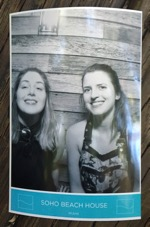

Hi I am Anais :)
So here is a little bit about me:
- I just became an Ironhack student and am learning how to be a junior web developer.
- I spent 7 years living in Rome and travelling around Europe (mostly I was studying and then working for the United Nations).
- I speak 3 languages fluently, and learned quite a bit of conversational Italian while I lived abroad.
- I was raised in Miami, and after many years of being spread across the globe, my immediate family all lives here.
- I've worked in all sorts of different jobs, anywhere from dog walker and babysitter, to personal chef, UN reporting associate, cocktail server, and nail salon manager.
- I love food, books and movies, nature, and especially exploring the world and getting to meet all different kinds of people!
 That's my best friend Nicole on the left, and me. She lives in London and I almost never get to see her. But we always try to reunite at least once a year! We took that photo during my birthday recently! That's my best friend Nicole on the left, and me. She lives in London and I almost never get to see her. But we always try to reunite at least once a year! We took that photo during my birthday recently! That's my best friend Nicole on the left, and me. She lives in London and I almost never get to see her. But we always try to reunite at least once a year! We took that photo during my birthday recently! That's my best friend Nicole on the left, and me. She lives in London and I almost never get to see her. But we always try to reunite at least once a year! We took that photo during my birthday recently! That's my best friend Nicole on the left, and me. She lives in London and I almost never get to see her. But we always try to reunite at least once a year! We took that photo during my birthday recently! That's my best friend Nicole on the left, and me. She lives in London and I almost never get to see her. But we always try to reunite at least once a year! We took that photo during my birthday recently! That's my best friend Nicole on the left, and me. She lives in London and I almost never get to see her. But we always try to reunite at least once a year! We took that photo during my birthday recently!